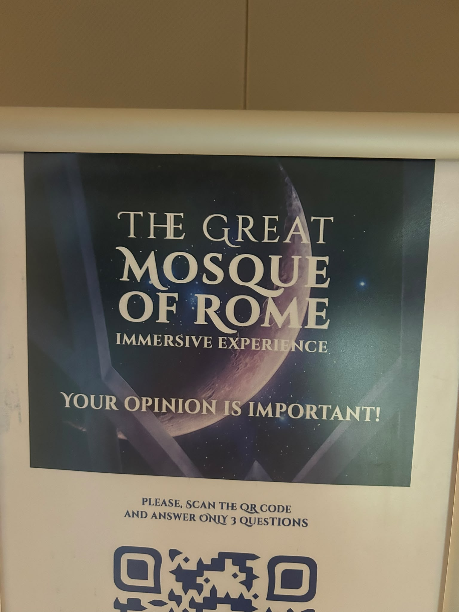
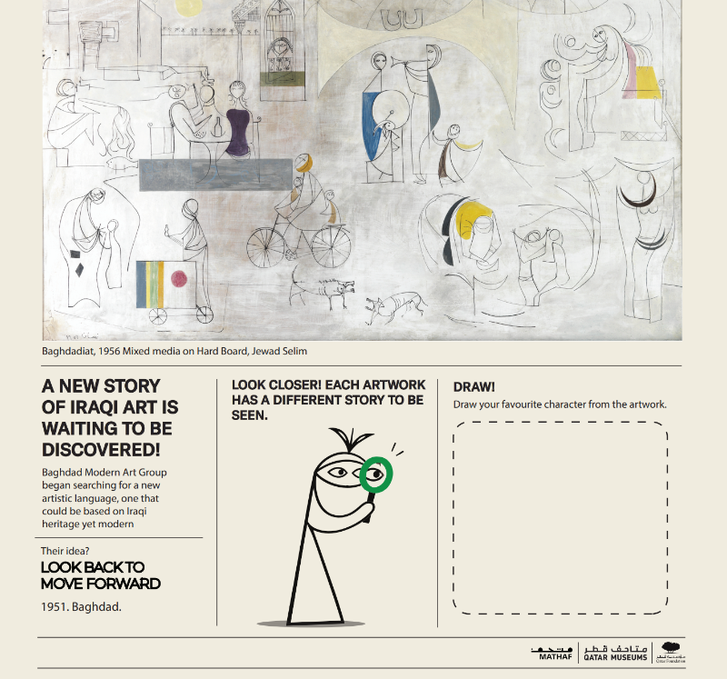
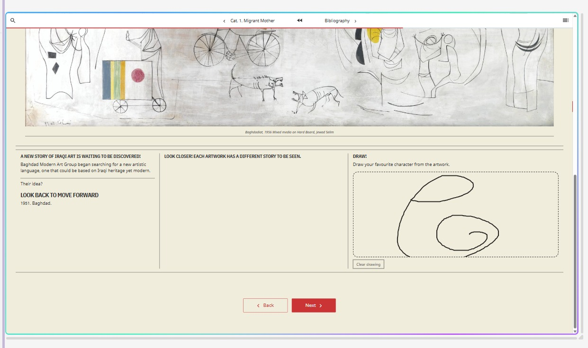
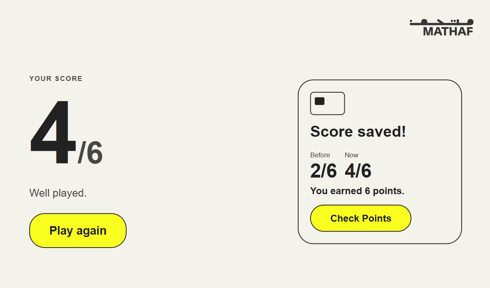
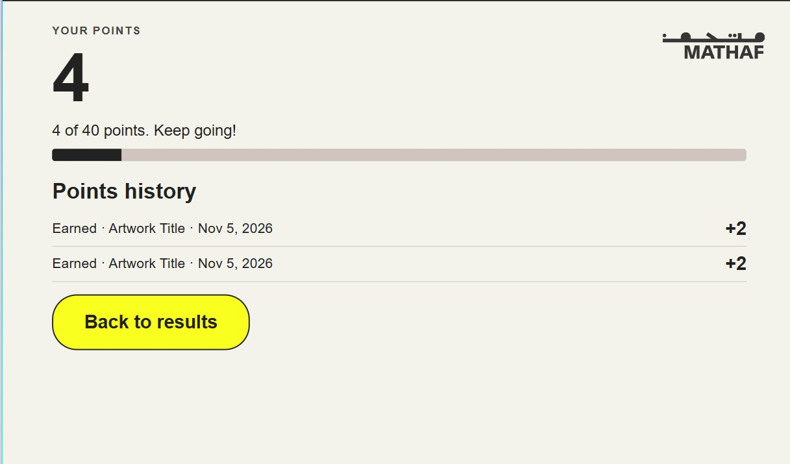

Sunday: I created a new Git repository for the Quire project and reviewed Christophe's Word file for the project description. Once done reviewing, I had a clearer vision for all the prototypes that we had to do.
Monday: Otba and I went to the Great Mosque of Rome Immersive Experience. There were VR headsets available for visitors to experience a virtual reconstruction of the mosque. I would say it was a fascinating way to learn about the history and architecture of the site. Although I did feel some discomfort from the VR headset, as whenever I moved on the VR, my body felt like it was tilting as well. However, it was an overall positive experience.

Tuesday: I requested the content for the Quire booklet. I first explored how Quire could support interactive questions and a drawing activity, then built a working mouse- and touch-friendly drawing canvas with a clear button for Catalogue 2. I updated the cover and added baghdadiat.jpg, then redesigned Catalogue 2 to follow the reference Ghada sent.


Wednesday: We realized that there had been some miscommunication and that we were sent the wrong Getty file, so the content did not match. We then attended a meeting with the Learning and Outreach department to discuss how we could improve our Art Recall prototype. After gathering more ideas and refining what we should focus on, we decided to keep the Year category, and the Learning and Outreach department will provide us with another set of questions. Christophe and Ghada also suggested adding the card to the user's phone wallet, allowing users to use their phones instead of a physical card while still earning points when visiting Mathaf again. After the meeting, I started testing whether we could use a card on the phone. Once I completed the code, I tested it by tapping the phone on the RFID scanner. The RFID scanner was able to detect the phone using the same 13.56 MHz frequency. Once I confirmed this, I moved on to creating the new questions for the Year category.
Thursday: I started the day by collecting all the photos needed for the Year category. I sent them to Otba to refine, and once they were done, I uploaded all the images to the Quiz-game folder on the Raspberry Pi. I did further research on using a phone-based card with the Raspberry Pi and discovered that the RFID scanner we have (RFID-RC522) is not compatible with Apple Wallet or Google Wallet, so we had to adjust our idea. We decided to stay with the physical card, but once users tap their card, they can earn points. Once they reach a certain number of points, they can claim a reward, and the required points will be deducted from their balance. I began working on the code and added a points system to the museum quiz that links saved results to a visitor's card. The first quiz in a category banks its score, while the second awards both scores as points. A third quiz earns half its score, rounded down, after which that category cannot earn more points until the next day. Visitors can also check their balance, progress toward 40 points, and points history.

